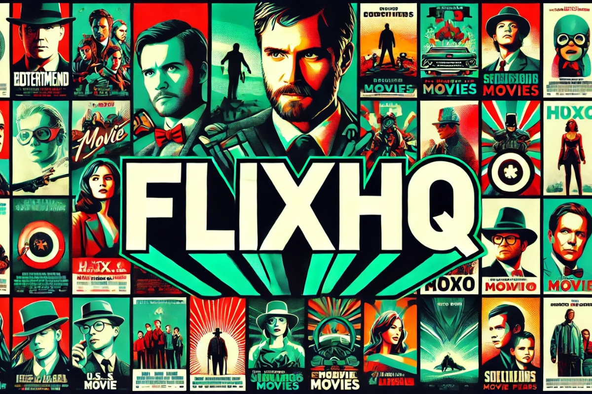

FlixHQ - Watch Movies & TV Series Online Eng Sub for Free
Streaming platforms have revolutionized how we watch movies and shows, and FlixHQ is gaining popularity as a go-to for free content. In this article, we’ll explore what makes FlixHQ unique, discuss its safety, compare it to other streaming options, and provide step-by-step guidance for using it responsibly.

What is FlixHQ?
FlixHQ is an online streaming platform that provides users access to a broad library of movies and TV shows without a subscription fee. Known for its accessibility and user-friendly interface, it caters to users looking to enjoy content from various genres at no cost. However, like many free platforms, FlixHQ has nuances regarding safety and legality that users should consider.
Is FlixHQ Safe and Legal?
One of the biggest questions around FlixHQ is its safety and legality. Here’s a breakdown of these two concerns:
- Legal Concerns: Free streaming sites like FlixHQ may sometimes host content without proper licensing. This raises questions about its legality, as content providers may not always secure distribution rights. For a safer experience, always verify content sources or consider using a VPN to mask your browsing activity.
- Safety Concerns: Free streaming sites can come with risks like ads, pop-ups, or malware. Users should have strong antivirus software and consider using an ad blocker when accessing such platforms to reduce exposure to harmful content.
“Free streaming platforms can offer convenient access, but users should prioritize cybersecurity,” says Emily Reardon, Streaming Safety Analyst.
Top Features of FlixHQ
- Wide Content Library: From popular series to classic movies, FlixHQ has a diverse collection that appeals to varied tastes.
- Quality Options: FlixHQ often allows users to choose between streaming quality options, including HD, which enhances the viewing experience.
- User-Friendly Interface: The site layout is easy to navigate, with search and categorization options that make it simple to find specific shows or movies.
- Device Compatibility: FlixHQ works on multiple devices, including desktops, tablets, and smartphones.
FlixHQ vs. Other Streaming Platforms
FlixHQ has certain advantages over popular paid platforms, but it also has notable limitations. Here’s a quick comparison of FlixHQ with other major streaming services like Netflix, Hulu, and Prime Video:
| Feature | FlixHQ | Netflix | Hulu | Prime Video |
|---|---|---|---|---|
| Content Library | Broad, varied genres | Extensive original and licensed content | Focus on shows and recent movies | Large library, including originals |
| Cost | Free | Subscription-based | Subscription-based | Subscription-based |
| Ad-Free Experience | Limited, requires ad blocker | Yes, in premium plans | No, unless in premium plans | Ad-free |
| Device Compatibility | High | High | High | High |
“While FlixHQ is appealing for free content, premium platforms offer quality and security that free sites often can’t match,” states James Turner, Digital Streaming Analyst.
How to Use FlixHQ: A Step-by-Step Guide
- Visit the Website: Go to the official FlixHQ site or a trusted mirror link.
- Search for Content: Use the search bar to find specific movies or shows or explore categories.
- Adjust Quality Settings: Choose from available quality options, which can improve streaming depending on your internet connection.
- Enable Safety Precautions: Use an ad blocker and ensure antivirus protection to avoid pop-ups or malware.
- Use a VPN if Necessary: For added privacy and to access content safely, consider using a VPN.
Is FlixHQ Worth Using?
Whether FlixHQ is the right choice depends on your streaming needs and tolerance for certain risks. Here are some pros and cons to help you decide:
- Pros: Access to a large library without subscription fees, HD content, and device compatibility.
- Cons: Potential legality issues, possible exposure to ads or malware, and variable streaming quality.
For a safer and ad-free experience, some users prefer paid streaming options, especially for exclusive content and higher streaming reliability.
Frequently Asked Questions (FAQ)
What is FlixHQ?
FlixHQ is a free streaming platform with access to movies and TV shows without a subscription.
Is FlixHQ completely free?
Yes, users can access the site’s content for free, though ad blockers and antivirus are recommended.
Is it legal to watch content on FlixHQ?
This depends on content licensing in your region. Be cautious and consider using a VPN to protect your privacy.
Can I watch HD movies on FlixHQ?
Yes, FlixHQ offers streaming quality options, including HD.
How does FlixHQ compare to paid services?
While free, FlixHQ may have safety risks, which are not as prevalent on paid streaming platforms.
Conclusion
FlixHQ offers a broad, free streaming experience with a wide variety of content. While it is user-friendly and convenient, there are potential risks. For those who prioritize safety and high-quality, uninterrupted streaming, paid alternatives may be better suited.
Ready to explore the world of streaming? Dive into FlixHQ responsibly and discover endless entertainment!